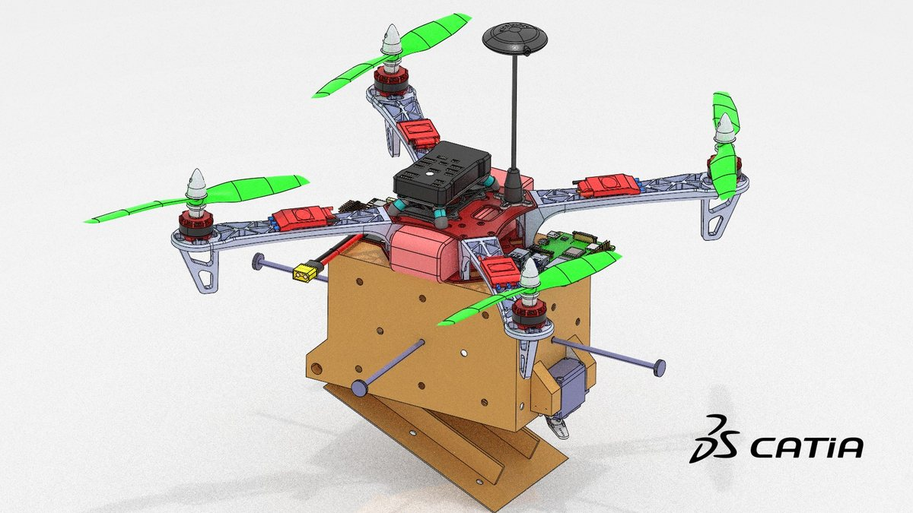
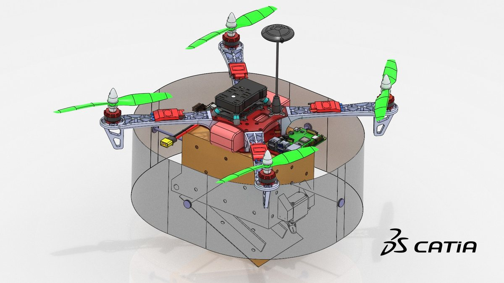
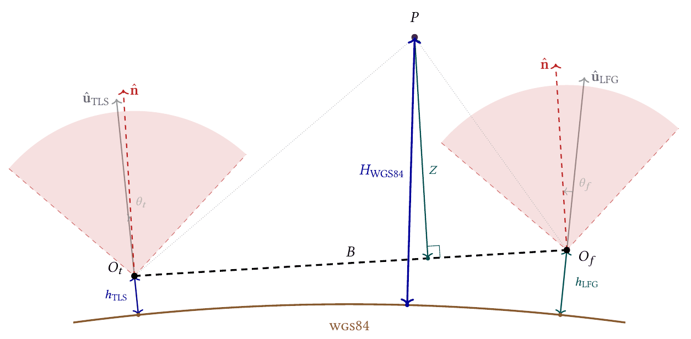
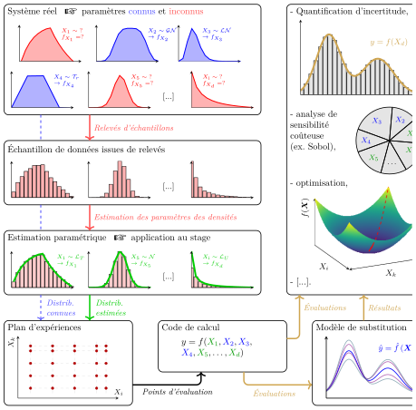

À venirUpcomingProjet de master au LASTRO (EPFL), co-encadré à l’ETH Zurich, à partir de mars 2027Master project at LASTRO (EPFL), co-supervised at ETH Zurich, from March 2027
01
Présentation
Profile
Élève ingénieur en dernière année, en double diplôme avec un master orienté recherche en perception artificielle et robotique.
Final-year engineering student, in a double degree with a research-oriented MSc in artificial perception and robotics.
Je suis en 3e année à SIGMA Clermont (INP Clermont Auvergne), dans le domaine Machines, Robots et Systèmes, parcours SMR, et en M2 Perception artificielle et robotique à l’Université Clermont Auvergne, adossé à l’Institut Pascal. J’ai suivi auparavant les classes préparatoires PCSI puis PSI au lycée La Martinière Monplaisir, à Lyon.
I am a third-year student at SIGMA Clermont (INP Clermont Auvergne), in the Machines, Robots and Systems programme, SMR track, and in the MSc Artificial Perception and Robotics at Université Clermont Auvergne, attached to Institut Pascal. Before that, I attended the PCSI then PSI preparatory classes at Lycée La Martinière Monplaisir, in Lyon.
Avant une année de césure, j’ai effectué un stage de recherche au CEA, en statistique et calcul scientifique. Pendant la césure, j’ai travaillé chez CLAAS en calcul de structures, puis à l’ONERA en vision par ordinateur et géométrie multivue. À l’école, j’ai été chef d’équipe du groupe Sigmatronik au Dassault UAV Challenge.
Before a gap year, I completed a research internship at CEA in statistics and scientific computing. During the gap year, I worked at CLAAS in structural analysis, then at ONERA in computer vision and multi-view geometry. At school, I led the Sigmatronik team in the Dassault UAV Challenge.
Je m’intéresse aux mathématiques et à la géométrie appliquées à la vision par ordinateur et à la robotique : groupes de Lie, SE(3), quaternions, estimation d’état, stéréovision, SLAM et filtrage probabiliste. Je préfère le versant géométrique et mathématique au deep learning générique.
I am interested in mathematics and geometry applied to computer vision and robotics: Lie groups, SE(3), quaternions, state estimation, stereovision, SLAM and probabilistic filtering. I prefer the geometric and mathematical side to generic deep learning.
De mars à septembre 2027, je réaliserai mon projet de master au LASTRO à l’EPFL, avec un co-encadrement de Konrad Schindler à l’ETH Zurich, sur la détection et le suivi de mini-drones. Je souhaite ensuite poursuivre en thèse à la rentrée 2027.
From March to September 2027, I will carry out my master project at LASTRO, EPFL, co-supervised by Konrad Schindler at ETH Zurich, on the detection and tracking of mini-drones. I then intend to start a PhD in autumn 2027.
02
Compétences
Skills
Techniques
Technical
T1Vision par ordinateur et géométrie multivueComputer vision and multi-view geometryModèles et calibration de caméras, stéréovision, segmentation d’images par apprentissage profond.Camera models and calibration, stereovision, deep-learning image segmentation.Stage ONERA ; master Perception artificielle et robotiqueONERA internship; MSc Artificial Perception and Robotics
T2Conception et simulation mécaniqueMechanical design and simulationCalcul de structures par éléments finis, fatigue, dimensionnement, CAO.Finite element structural analysis, fatigue, sizing, CAD.Stage CLAAS ; Dassault UAV ChallengeCLAAS internship; Dassault UAV Challenge
T3Statistique et calcul scientifiqueStatistics and scientific computingStatistique inférentielle, optimisation numérique, développement en Python et C++.Inferential statistics, numerical optimisation, development in Python and C++.Stage CEACEA internship
Humaines et organisationnelles
Interpersonal and organisational
S1Communication scientifique et techniqueScientific and technical communicationRédaction de rapports et de synthèses, en français et en anglais.Writing reports and summaries, in French and English.Fiches de synthèse des stages et du projet ; anglais C1Summaries of the internships and the project; English C1
S2Travail en équipe pluridisciplinaireWorking in multidisciplinary teamsProjet mené en équipe ; échanges avec la conception et les essais.Team project; working with design and testing.Dassault UAV Challenge ; stage CLAASDassault UAV Challenge; CLAAS internship
S3Prise en compte des enjeux environnementaux et de sûretéEnvironmental and safety awarenessImpact climatique de l’aviation, sûreté nucléaire.Climate impact of aviation, nuclear safety.Stages ONERA et CEAONERA and CEA internships
03
Projets
Projects

septembre 2024 – avril 2025September 2024 – April 2025Dassault UAV ChallengeConception d’un drone quadricoptère de largage à camouflage optique dynamiqueDesign of a delivery quadcopter with dynamic optical camouflageChef d’équipe, groupe Sigmatronik, SIGMA ClermontTeam leader, Sigmatronik group, SIGMA Clermont
Contexte
Context
Le Dassault UAV Challenge, organisé par Dassault Aviation, demande à des équipes d’écoles d’ingénieurs de concevoir un drone autonome répondant à un tableau d’exigences. L’équipe a retenu une mission de livraison humanitaire d’une ration de survie en zone sinistrée, complétée par un camouflage optique dynamique.
The Dassault UAV Challenge, organised by Dassault Aviation, asks engineering school teams to design an autonomous drone meeting a set of requirements. The team chose a humanitarian mission, delivering a survival ration to a disaster area, complemented by dynamic optical camouflage.
Travaux
Work
Ingénierie système sous PTC Modeler (SysML) : cycle de vie, parties prenantes, diagramme d’états, cas d’utilisation et exigences, architectures logique et physique, choix des solutions par matrices de Pugh.
Architecture : contrôleur de vol Pixhawk sous ArduPilot, Raspberry Pi 4 reliée par MAVLink, liaisons radio à 2,4 et 5,8 GHz, GPS.
Dimensionnement de la chaîne de propulsion (châssis, moteurs, hélices, ESC, batteries) à partir de données d’essais sur banc.
Mécanisme de largage : trappe verrouillée par servomoteur et ressort de rappel, boîtier de charge imprimé en PLA.
Camouflage optique dynamique : une caméra grand angle filme l’arrière-plan et des LED en reproduisent les couleurs sur le boîtier ; prototype sur Raspberry Pi avec OpenCV.
Assemblage complet sous 3DEXPERIENCE CATIA, schéma électrique et nomenclature.
Systems engineering in PTC Modeler (SysML): life cycle, stakeholders, state diagram, use cases and requirements, logical and physical architectures, solution choices with Pugh matrices.
Architecture: Pixhawk flight controller running ArduPilot, Raspberry Pi 4 linked through MAVLink, 2.4 and 5.8 GHz radio links, GPS.
Sizing of the propulsion chain (frame, motors, propellers, ESCs, batteries) from bench test data.
Release mechanism: servo-locked hatch with a return spring, PLA-printed payload box.
Dynamic optical camouflage: a wide-angle camera films the background and LEDs reproduce its colours on the box; prototype on Raspberry Pi with OpenCV.
Full assembly in 3DEXPERIENCE CATIA, wiring diagram and bill of materials.

Assemblage du drone sous 3DEXPERIENCE CATIA.Drone assembly in 3DEXPERIENCE CATIA.Prototype du camouflage : webcam, Raspberry Pi et matrice de LED.Camouflage prototype: webcam, Raspberry Pi and LED matrix.
Analyse
Analysis
Pour une première participation, le principal risque était d’omettre un élément critique. Le projet a donc privilégié une ingénierie système approfondie et des solutions éprouvées, afin de dégager du temps pour l’innovation. À la remise du dossier, le drone n’était pas encore assemblé. L’enseignement transmis aux équipes suivantes est de garantir d’abord les exigences obligatoires avant les exigences facultatives.
For a first participation, the main risk was overlooking a critical element. The project therefore favoured thorough systems engineering and proven solutions, to free up time for innovation. When the file was submitted, the drone was not yet assembled. The lesson passed on to the following teams is to secure the mandatory requirements first, before the optional ones.
PDFFiche de synthèseSummary report (in French)Conception d’un drone quadricoptère de largage à camouflage optique dynamique
22 mars – 24 septembre 202722 March – 24 September 2027EPFL · ETH ZurichProjet de master (à venir) — détection et suivi de mini-dronesMaster project (upcoming) — detection and tracking of mini-dronesLASTRO, EPFL, Lausanne ; co-encadrement : Konrad Schindler, groupe de photogrammétrie et télédétection, Institute of Geodesy and Photogrammetry, ETH ZurichLASTRO, EPFL, Lausanne; co-supervision: Konrad Schindler, Photogrammetry and Remote Sensing group, Institute of Geodesy and Photogrammetry, ETH Zurich
Le projet vise à détecter des mini-drones non coopératifs avec plusieurs caméras fixes grand angle pointées vers le ciel, à suivre leur trajectoire et à reconstruire leur position 3D au cours du temps par triangulation, puis à prédire leur trajectoire à court terme. La détection, le suivi et l’identification existent déjà hors ligne ; ce projet de master en constitue la deuxième phase.
The project aims to detect non-cooperative mini-drones with several fixed wide-angle cameras pointed at the sky, to track their trajectory and reconstruct their 3D position over time by triangulation, then to predict their short-term trajectory. Detection, tracking and identification already exist offline; this master project is the second phase.
Exécution de la chaîne en temps quasi réel.
Prédiction de trajectoire à court terme.
Intégration d’une caméra pan-tilt-zoom (PTZ) pilotée automatiquement vers la position prédite du drone.
Gestion de la latence entre logiciel de vision et commande matérielle.
Essais terrain.
Évaluation de la précision du suivi, de la prédiction et du pointage par rapport à une vérité terrain RTK de précision centimétrique.
Running the pipeline in near real time.
Short-term trajectory prediction.
Integration of a pan-tilt-zoom (PTZ) camera automatically steered towards the predicted drone position.
Handling latency between vision software and hardware control.
Field tests.
Evaluation of tracking, prediction and pointing accuracy against centimetre-level RTK ground truth.
Compétences mobilisées : calibration, triangulation, filtrage de Kalman, commande en boucle fermée, temps réel. Projet de master EPFL de six mois (30 ECTS), sous la direction de Jean-Paul Kneib (LASTRO) ; gestion du projet : Berry Holl (EPFL).Skills involved: calibration, triangulation, Kalman filtering, closed-loop control, real time. Six-month EPFL master project (30 ECTS), directed by Jean-Paul Kneib (LASTRO); project management: Berry Holl (EPFL).
Estimation de l’altitude des traînées de condensation par stéréovision à longue base, à partir de deux caméras hémisphériques au sol (OMEA 3C à Toulouse, OMEA 5C au Fauga) distantes d’environ 25,7 km.
Reprojection de chaque image fisheye en vue gnomonique de focale fixe, équivalente à un modèle sténopé de matrice intrinsèque K inversible.
Poses des deux caméras dans SE(3), exprimées dans un repère ENU commun via l’ECEF, avec prise en compte de la courbure terrestre ; correction de l’inclinaison par une rotation de Rodrigues appliquée comme homographie.
Altitude estimée par recherche de zéro de Brent, en maximisant le recouvrement (IoU) des masques de segmentation reprojetés à l’altitude testée.
Association de chaque traînée à l’avion qui l’a produite par corrélation avec les trajectoires ADS-B, ramenées au référentiel orthométrique des caméras par correction de l’ondulation du géoïde ; advection des traînées par le vent estimée à partir des champs du modèle AROME.
Segmentation des traînées par le modèle U-Net (encodeur EfficientNet-B7) et, en segmentation d’instances, par le modèle Mask2Former (Swin-Small), entraînés en cascade : pré-entraînement sur GVCCS, puis affinage sur les jeux IPSL et ONERA.
Refonte du code (contrails_stereo) autour d’une configuration unique OmegaConf, d’un lanceur SLURM avec chaînage des tâches et d’une interface d’inférence commune aux deux architectures.
Contrail altitude estimation by long-baseline stereovision, from two ground-based hemispherical cameras (OMEA 3C in Toulouse, OMEA 5C at Le Fauga) about 25.7 km apart.
Reprojection of each fisheye image into a fixed-focal gnomonic view, equivalent to a pinhole model with an invertible intrinsic matrix K.
Poses of both cameras in SE(3), expressed in a common ENU frame through ECEF, accounting for Earth curvature; tilt correction by a Rodrigues rotation applied as a homography.
Altitude estimated by Brent zero-search, maximising the overlap (IoU) of the segmentation masks reprojected at the tested altitude.
Association of each contrail with the aircraft that produced it by correlation with ADS-B tracks, brought to the cameras’ orthometric reference by geoid undulation correction; contrail advection by wind estimated from AROME model fields.
Contrail segmentation with the U-Net model (EfficientNet-B7 encoder) and, for instance segmentation, the Mask2Former model (Swin-Small), trained in cascade: pre-training on GVCCS, then fine-tuning on the IPSL and ONERA datasets.
Code refactoring (contrails_stereo) around a single OmegaConf configuration, a SLURM launcher with job chaining and an inference interface shared by both architectures.
Encadrement : Judicaël Bedouet ; co-encadrement : Claire Sarrat (physique de l’atmosphère, DTIS). Travail inscrit dans plusieurs projets de l’ONERA sur l’impact climatique de l’aviation, dont ClimAviation. Un article de journal intégrant ce travail est en préparation, coécrit avec un doctorant de l’ONERA.Supervisor: Judicaël Bedouet; co-supervisor: Claire Sarrat (atmospheric physics, DTIS). Work carried out within several ONERA projects on the climate impact of aviation, including ClimAviation. A journal article including this work is in preparation, co-written with an ONERA PhD student.

Géométrie du calcul d’altitude entre les deux stations, échelles verticales exagérées.Altitude computation geometry between the two stations, vertical scales exaggerated.PDFFiche de synthèseSummary report (in French)Détection de traînées de condensation et estimation d’altitude par stéréovision à longue base
Wrapper Python exposant Uranie, plateforme C++ du CEA basée sur ROOT et dédiée à la quantification d’incertitudes, sur ses modules d’estimation de lois paramétriques, de métamodélisation et d’apprentissage automatique et profond.
Interfaçage avec SciPy et adaptation des méthodes d’estimation selon les familles de lois ; analyse fonctionnelle de l’architecture et du code source des modules statistiques et d’optimisation de SciPy.
Étude des méthodes d’optimisation numérique et de la statistique inférentielle sous-jacente à l’ajustement de lois.
Implémentation directe en C++ dans Uranie de méthodes fit() équivalentes à celles de SciPy, avec un prototype s’appuyant sur ROOT et Minuit2 pour l’optimisation.
Python wrapper exposing Uranie, the CEA’s ROOT-based C++ platform for uncertainty quantification, on its parametric distribution estimation, metamodelling and machine and deep learning modules.
Interfacing with SciPy and adaptation of the estimation methods to the distribution families; functional analysis of the architecture and source code of SciPy’s statistics and optimisation modules.
Study of the numerical optimisation methods and of the inferential statistics underlying distribution fitting.
Direct C++ implementation in Uranie of fit() methods equivalent to SciPy’s, with a prototype relying on ROOT and Minuit2 for optimisation.
Encadrement : Gabriel Sarazin, ingénieur de recherche.Supervisor: Gabriel Sarazin, research engineer.

Démarche de propagation des incertitudes.Uncertainty propagation workflow.PDFFiche de synthèseSummary report (in French)Estimation paramétrique de lois de probabilité dans la plateforme Uranie
Calcul de structures par éléments finis pour la validation des presses à balles, sous HyperMesh, OptiStruct et HyperView.
Pièces mécano-soudées modélisées en éléments volumiques (HEX8, PENTA6, deux éléments dans l’épaisseur), soudures en PENTA6 couplées aux tôles par RBE3, peaux membranes pour la lecture des contraintes ; calculs contrôlés par l’équilibre global des réactions, la compliance et le résidu d’énergie de déformation.
Consolidation du modèle complet du châssis d’une nouvelle presse à balles carrées : remaillage, intégration d’un superélément, mise à jour de modèles anciens.
Analyse de défaillance d’une rampe fissurée en essais terrain : simulation de plusieurs hypothèses par combinaison de cas de charge unitaires, jusqu’à identifier le cas responsable et valider les corrections.
Comparaison entre éléments finis et approche sans maillage (SimSolid) sur la prétension des vis d’un bras de piston.
Corrélation essais-calcul en fatigue par la courbe de Wöhler (modèle de Basquin).
Finite element structural analysis for the validation of balers, with HyperMesh, OptiStruct and HyperView.
Welded parts modelled with solid elements (HEX8, PENTA6, two elements through the thickness), welds as PENTA6 coupled to the plates by RBE3, membrane skins for stress reading; analyses checked through global reaction balance, compliance and strain energy residual.
Consolidation of the complete chassis model of a new square baler: remeshing, integration of a superelement, update of older models.
Failure analysis of a ramp that cracked in field tests: simulation of several hypotheses by combining unit load cases, until the responsible case was identified and the corrections validated.
Comparison between finite elements and a meshless approach (SimSolid) on the bolt preload of a piston arm.
Test–model correlation in fatigue using the Wöhler curve (Basquin model).
Modèle éléments finis d’un assemblage soudé.Finite element model of a welded assembly.PDFFiche de synthèseSummary report (in French)Analyse par éléments finis appliquée à la validation structurelle de presses à balles


.jpg){kind=link}